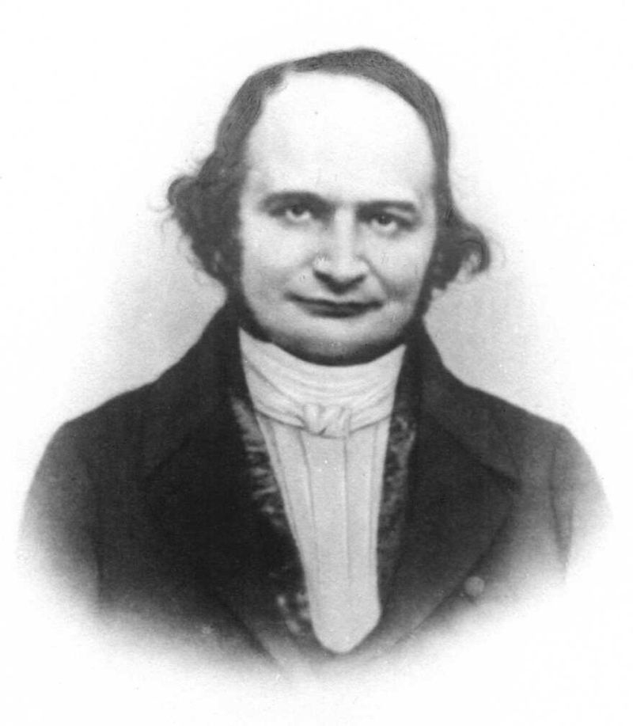

這份筆記是關於反函數定理與其證明。
變換
我們考慮\(n\)個變數和\(n\)個函數，例如 \[ \left\{ \begin{aligned} \xi&=\phi(x,y)\\ \eta&=\psi(x,y) \end{aligned} \right. \] 我們把這視為映射或變換。
例 1：線性變換 (Linear Transformation)
考慮 \[ \left\{ \begin{aligned} \xi&=ax+by\\ \eta&=cx+dy \end{aligned} \right. \] 我們可以簡單地找到\(a',b',c',d'\)使得 \[ \left\{ \begin{aligned} x&=a'\xi+b'\eta\\ y&=c'\xi+d'\eta \end{aligned} \right. \]
目標 2
我們希望給定 \[ \left\{ \begin{aligned} \xi&=\phi(x,y)\\ \eta&=\psi(x,y) \end{aligned} \right. \] 想要找到\(g,h\)使得至少局部有 \[ \left\{ \begin{aligned} x&=g(\xi,\eta)\\ y&=h(\xi,\eta) \end{aligned} \right. \] 首先，考慮\(F:\mathbb{R}^n\to\mathbb{R}^n\)(例如\(F(x,y)=(\phi(x,y),\psi(x,y))=(\xi,\eta)\))。我們希望找到符合要求的\(g,h\)的話，至少\(F\)要是單射。
例 3：反演 (Inversion)
考慮 \[
\left\{
\begin{aligned}
\xi&=\frac{x}{x^2+y^2}\\
\eta&=\frac{y}{x^2+y^2}
\end{aligned}
\right.
\] 我們可以發現以下兩件事：
1. 可以發現\(\xi^2+\eta^2=\frac{1}{x^2+y^2}\)，即\((\xi,\eta)\)和\((x,y)\)與點距離成倒數(見下圖1)。
2. 直線\(x=k\)會被映射成一個圓。
說明： \[
\begin{aligned}
&\xi^2+\eta^2=\frac{1}{k^2+y^2}=\frac{1}{k\xi}\\
\Rightarrow&\left(\xi-\frac{1}{2k}\right)^2+\eta^2=\left(\frac{1}{2k}\right)^2
\end{aligned}
\] QED
反函數定理
假如上述目標2成立，則 \[ \left\{ \begin{aligned} \xi&=\phi(g(\xi,\eta),h(\xi,\eta))\\ \eta&=\psi(g(\xi,\eta),h(\xi,\eta)) \end{aligned} \right. \] 於是，可以兩邊偏微分，有 \[ \left\{ \begin{aligned} 1&=\phi_xg_\xi+\phi_yh_\xi\\ 0&=\phi_xg_\eta+\phi_yh_\eta\\ 0&=\psi_xg_\xi+\psi_yh_\xi\\ 1&=\psi_xg_\eta+\psi_yh_\eta \end{aligned} \right. \] 於是 \[ \left\{ \begin{aligned} g_\xi&=\psi_y/D\\ g_\eta&=-\phi_y/D\\ h_\xi&=-\psi_x/D\\ h_\eta&=\phi_x/D \end{aligned} \right. \] 其中 \[ D=\left| \begin{array}{cc} \phi_x & \phi_y \\ \psi_x & \psi_y \end{array} \right| \]
定義 4：雅可比行列式 (Jacobian Determinant)
我們將 \[ D=\left| \begin{array}{cc} \phi_x & \phi_y \\ \psi_x & \psi_y \end{array} \right| \] 稱為\((\phi,\psi)\)的雅可比行列式。
定理 5：反函數定理 (Inverse Function Theorem)
令\(\phi(x,y),\psi(x,y)\)在\((x_0,y_0)\)的附近是連續可微的，並令雅可比行列式\(D=\phi_x\psi_y-\phi_y\psi_x\)在\((x_0,y_0)\)非零。則存在\((x_0,y_0), (u_0,v_0)=(\phi(x_0,y_0),\psi(x_0,y_0))\)的鄰域\(N,N'\)使得在這之中映射 \[ \left\{ \begin{aligned} u&=\phi(x,y)\\ v&=\psi(x,y) \end{aligned} \right. \] 有反函數 \[ \left\{ \begin{aligned} x&=g(u,v)\\ y&=h(u,v) \end{aligned} \right. \] 並且 \[ \begin{aligned} \frac{\partial x}{\partial u}=\frac{1}{D}\frac{\partial v}{\partial y}&, \frac{\partial x}{\partial v}=\frac{-1}{D}\frac{\partial u}{\partial y}\\ \frac{\partial y}{\partial u}=\frac{-1}{D}\frac{\partial v}{\partial x}&, \frac{\partial y}{\partial v}=\frac{1}{D}\frac{\partial u}{\partial x} \end{aligned} \]
證明：由於\(D\neq 0\)，故\(\phi_x,\phi_y\)不會同時為零。WLOG，可以令\(\phi_x(x_0,y_0)\neq 0\)，於是方程\(u=\phi(x,y)\)可以被表為\(x\)的函數，即存在\(h_1,h_2,h_3\) s.t. 當\(|u-u_0|<h_1, |y-y_0|<h_2\)時，\(|x-x_0|<h_3\)時\(x=X(u,y)\)(這是隱函數定理，見這裡的定理2)。
於是，我們有\(\phi(X(u,y),y)=u,
X(u_0,y_0)=x_0\)。分別對\(u\)與\(y\)偏微分，有 \[
\begin{aligned}
\phi_x(X(u,y),y)&X_u(u,y)=1\\
\phi_x(X(u,y),y)X_y(u,y)&+\phi_y(X(u,y),y)=0\mbox{ (☆)}
\end{aligned}
\] 然後把\(X(u,y)\)替換進\(\psi(x,y)\)，並令\(\tilde{x}(u,y)=\psi(X(u,y),y)\)，則：
1. \[
\tilde{x}(u_0,y_0)=\psi(x_0,y_0)=v_0
\]
2. 由(☆)有 \[
\begin{aligned}
\tilde{x}_y(u_0,v_0)&=\psi_xX_y+\psi_y\\
&=-\psi_x\frac{\phi_y}{\phi_x}+\psi_y\\
&=\frac{D}{\phi_x}\neq 0
\end{aligned}
\] 於是，存在\(h_4,h_5,h_6\)使得\(|u-u_0|<h_4\), \(|v-v_0|<h_5\)時，\(\tilde{x}(u,y)=v\)有解\(y=h(u,v)\)，其中\(|y-y_0|<h_6\)(這還是隱函數定理)。
最後，令\(g(u,v)=X(u,h(u,v))\)，則\(x=g(u,v)\)。而偏導數只是繁複計算而已，這裡就跳過了。QED
註記 5-1
更多變數的狀況，考慮： \[ \left\{ \begin{aligned} \xi&=\phi(x,y,z)\\ \eta&=\psi(x,y,z)\\ \tau&=\tilde{\phi}(x,y,z) \end{aligned} \right. \] 它的雅可比行列式就是 \[ D=\frac{\partial(\xi,\eta,\tau)}{\partial(x,y,z)}=\left| \begin{array}{ccc} \phi_x & \phi_y & \phi_z \\ \psi_x & \psi_y & \psi_z \\ \tilde{\phi}_x & \tilde{\phi}_y & \tilde{\phi}_z \end{array} \right| \]